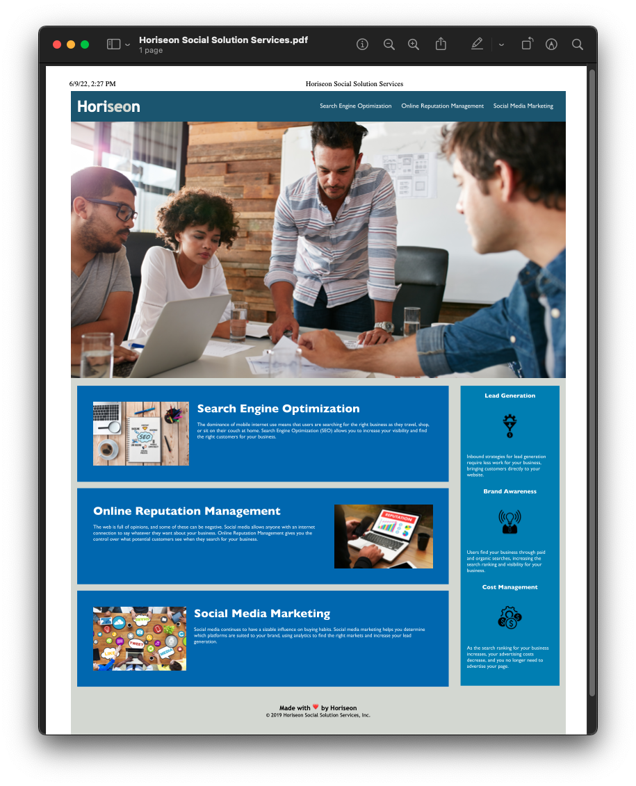

Please follow links at the top to inquire about your Media needs!
Web Design and Media Management are recent developments to Fortunate Son Studios, but we are eager; now more than ever to bring top of the line design and functionality to your projects!
Photography
Photos taken and edited by Mason Anthony Ortiz from Blackened Pheonix Photography.

Film Production
In conjunction with Blackened Phoenix Photography and the creative minds of local Texas talent, Fortunate Son Studios is proud to announce Fortunate Son Productions!

About Me


Mason Anthony Ortiz is a young artist with a massive passion and drive for media production. From websites to feature length productions to headshots for graduations or modelling agencies, your media needs are sure to be met! He graduated with a Bachelor's in Acting and Directing and much experience in stunt coordination, writing, producing, and developing many projects across Texas. Currently based out of San Antonio, Texas and is capable of expansion. This young professional is bound to make his mark in the industry as a major contributor and innovator to the Latin artist movement.